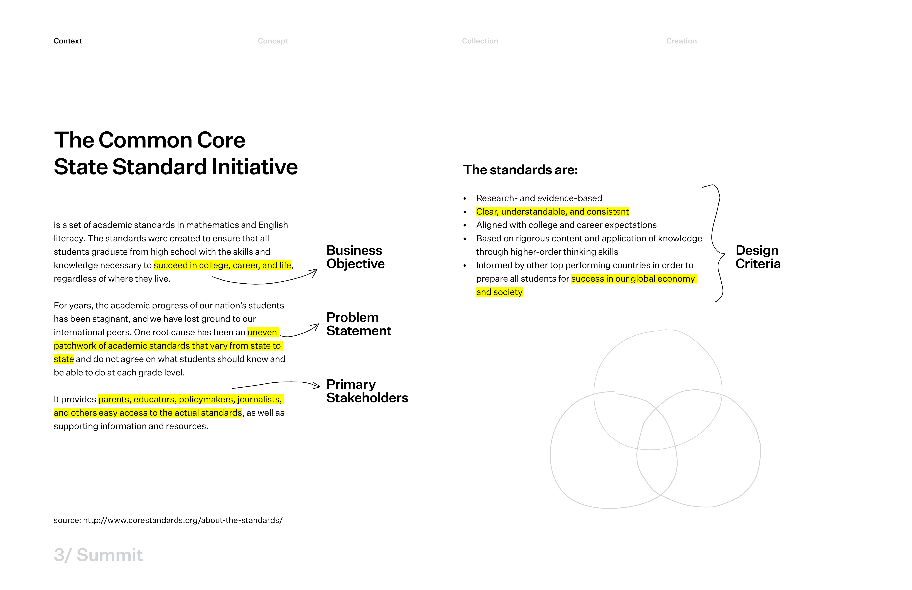
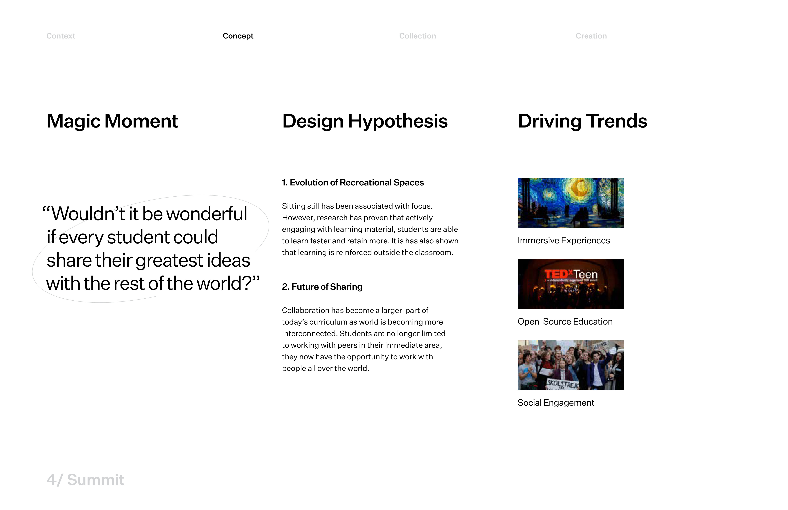
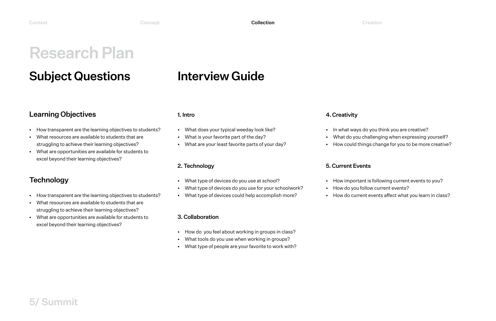
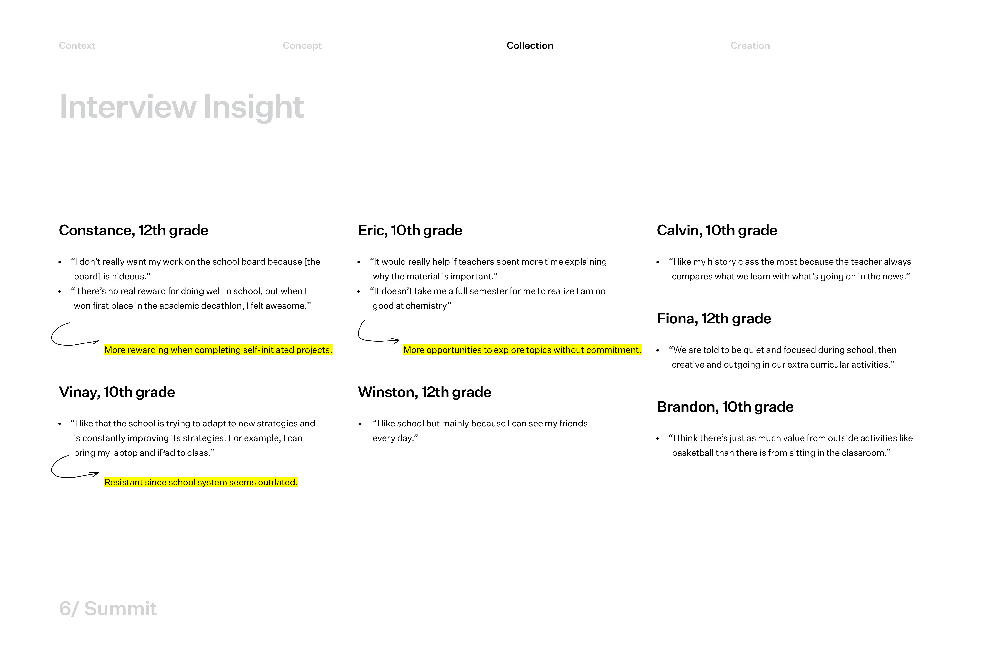
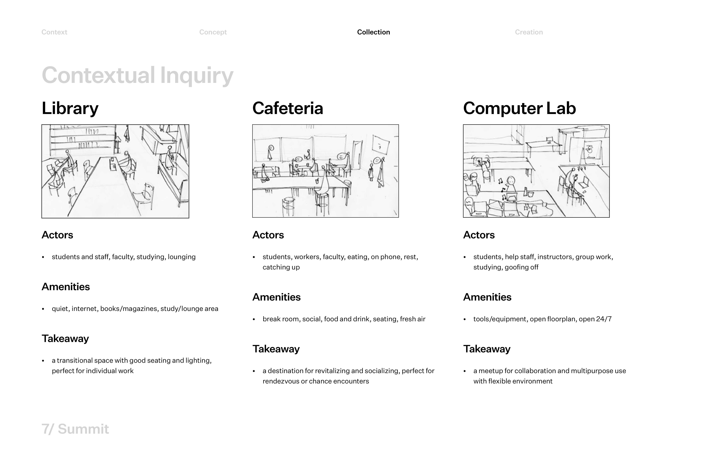
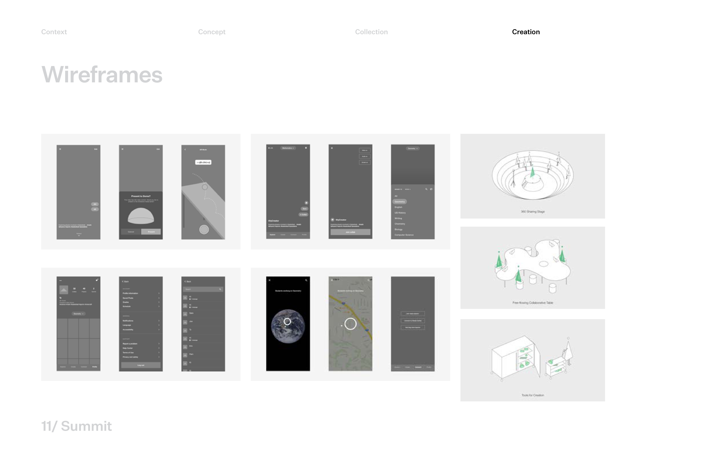
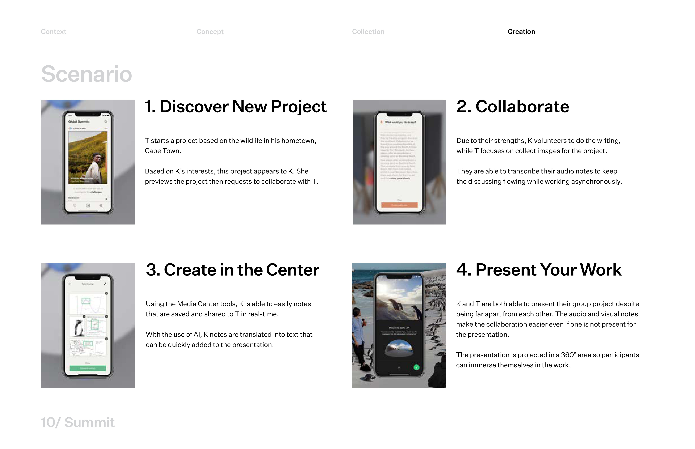
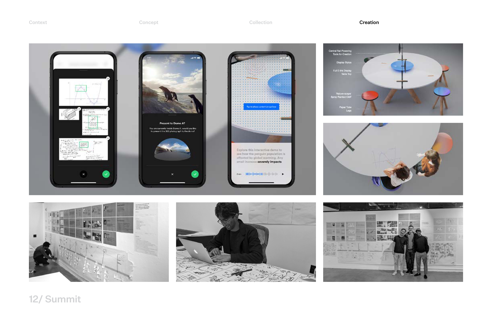

Partnering with the Common Core State Standards Initiative on their 10-year anniversary, we
were tasked with exploring what the future of K-12 education could look like. The goal of the
Core is to emphasize the application of knowledge for career success in a global economy and
society.
This project began in January 2020, before the COVID-19 lockdowns in the US.
Over the course of the project, we leaned into field research to understand how students learn and create. This process led us to the Summit Media Center, a mobile ecosystem and reimagined recreational space that encourage students to express initiative and collaboration through social involvement.
For the 10-year anniversary of the creation of the Common Core Initiative in 2010, we partnered with them to rethink what the next decade of K-12 education could bring. Our focus was less on delivering a solution and more on understanding the landscape through research, synthesis, and design thinking.

The Common Core is a set of shared academic standards for K-12 students across the US. For our team, it presents a clear design challenge: how can we make educational policy feel accessible and actionable, especially one with such a holistic vision of preparing students not just for college, but for life in a global economy and society?

Our exploration began with a question. "What would it look like if every student could share their greatest ideas with the rest of the world?" From there, we were interested in how recreational spaces could become active learning environments, and how students might collaborate and share beyond their immediate classrooms.

We developed research questions around how students related to their learning objectives, how they use technology in and outside the classroom, and how they engage with collaboration, creativity, and current events. These questions shaped an interview guide that we planned to bring into the field.

Following our research plan, we sat down with students at a neighboring high school and heard firsthand how they navigated their academics, used technology, and collaborated with peers. Their responses gave us a much richer picture of the gaps and possibilities.

While on campus, we turned our attention to spaces outside the classroom where collaboration happened naturally, such as the library, cafeteria, and computer labs. Since we were unable to photograph students, we relied on notes to capture how these environments shaped interaction.


Our research pointed us toward a mobile ecosystem where students could connect across classrooms and borders to work on shared projects. The experience follows a natural arc: students discover projects that interest them, collaborate with peers from other schools, and create media like audio and visual notes. To bring this creation step to life, we imagined a dedicated space, the Summit Media Center, where students could produce and present their work to a wider audience. We prototyped this experience with wireframes and user flows to test how each stage would feel in practice.
By letting our research and conversations with students guide the direction, we
arrived at something we wouldn't have anticipated at the outset. The Summit Media Center felt
like a natural response to what we heard and observed.
The instinct to try and define a solution early is strong. But sitting with ambiguity and
trusting the process led to ideas that felt more true to the people we were designing for, the
students.
